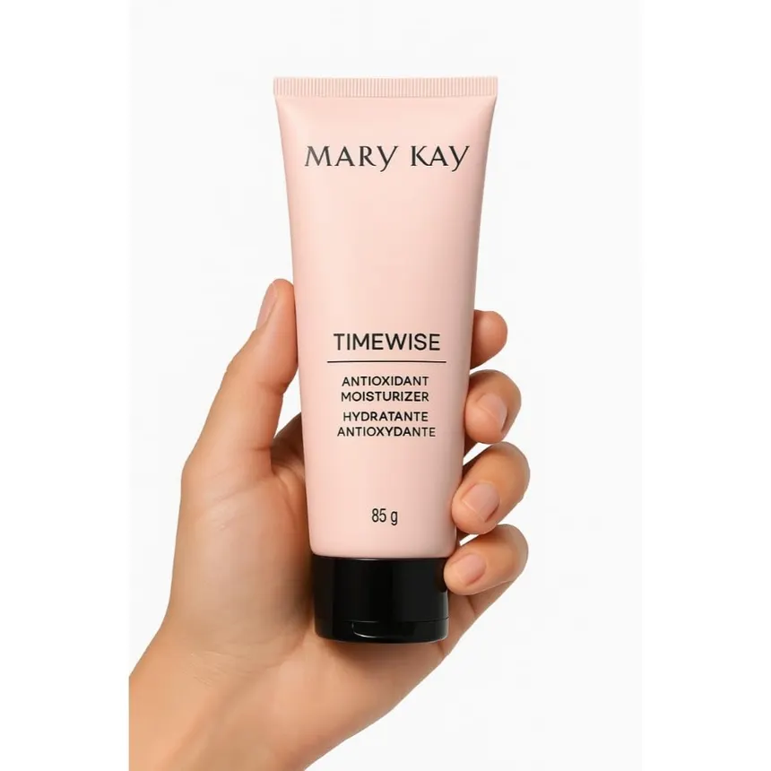

Detalhes do produto

Mary Kay
Hidratante Antioxidante TimeWise 85g
R$ 109,90
A pele é composta por cerca de 60% de água, portanto, mantê-la hidratada ajuda a garantir seu equilíbrio e função adequados.
Combata a falta de hidratação com essa dose de cuidados duas vezes ao dia. Deixe a pele com uma aparência mais radiante a cada aplicação do Hidratante Antioxidante TimeWise® com uma fórmula rica em antioxidantes que proporcionam 12 horas de hidratação.
| Marca | Mary Kay |
|---|---|
| Categoria | Cuidados com a pele |
| Conteúdo | 85g |